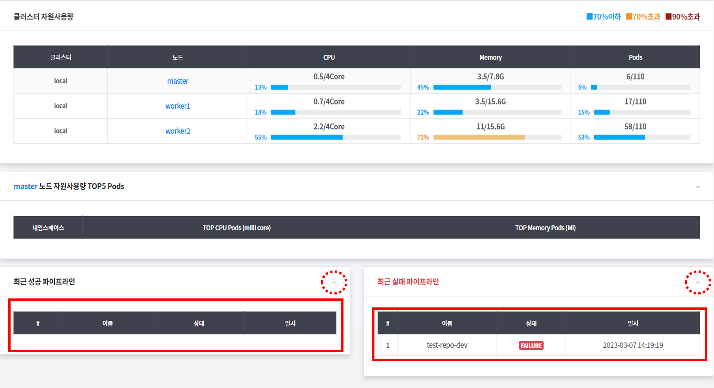

대시보드 조회하기
- 이 장은 클러스터별로 자원사용 현황과 파이프라인 현황 등의 정보를 조회하는 대시보드의 사용방법을 설명한다.
1. 클러스터 별 사용현황 조회하기
- 대시보드 메뉴는 클러스터 별 노드와 네임스페이스의 현황과 클러스터 자원 사용량, 노드 자원 사용량, 파이프라인 실행 현황 등의 정보를 표시한다.

아래는 각 항목에 대한 서명이다.
-
클러스터 목록
대시보드 제목 오른쪽에 클러스터의 목록이 나오며 특정 클러스터를 선택하게 되면 대시보드 현황을 해당 클러스터 내용으로 표시한다. -
노드
항목은 클러스터 별 노드의 총 개수를 표시한다. -
네임스페이스
클러스터 별 전체 네임스페이스의 총 개수를 표시한다. -
실행중인 컨테이너
항목은 클러스터 별 현재 실행중인 컨테이너의 총 개수를 표시한다. -
중지된 컨테이너
항목은 클러스터 별 현재 중지되어 있는 컨테이너의 총 개수를 표시한다.
숫자를 클릭하면 팝업 창이 뜨며 중지된 컨테이너의 목록을 확인할 수 있다. -
클러스터 자원 사용량
항목은 클러스터의 노드당 CPU, Memory, Pods 의 자원사용량을 표시한다.-
CPU 는 Core 기준, Memory 는 Giga Bytes 단위, Pods 는 개수 단위의 수치를 나타낸다.
(70% 미만 => 파란색, 70% 이상 => 노랑색, 90% 이상 => 빨강색) -
노드를 클릭하면 노드 별 Pods 의 자원 사용현황을 아래 표에 표시한다.

-
-
노드 자원 사용량 TOP5 Pods 항목
위 클러스터 자원 사용량 표에서 선택한 노드에 대해 하위 네임스페이스 별로
구동되는 Pod 중 CPU와 Memory 사용량이 가장 많은 상위 5 개의 Pod 의 현황
을 그래프로 표시한다. -
최근 성공 파이프라인
어플리케이션 배포한 이력 중 최근 성공한 5건을 표시한다. -
최근 실패 파이프라인
어플리케이션 배포한 이력 중 최근 실패한 5건을 표시한다.
